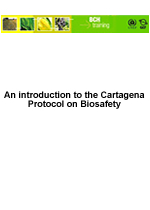

Descargar el manual completo en PDF
Este módulo describe brevemente algunos elementos clave del Protocolo de Cartagena que tienen relevancia para el Centro de Intercambio de Información sobre Seguridad de la Biotecnología. Incluye:
- información sobre los antecedentes y fines del Protocolo,
- los procedimientos de trabajo que se aplican y
- los arreglos institucionales y administrativos.
Público:
El objetivo de este módulo es orientar a los usuarios del Centro de Intercambio de Información sobre Seguridad de la Biotecnología (CIISB). Está pensado para un público no técnico, con escaso o nulo conocimiento del Protocolo de Cartagena y del CIISB, pero que necesite entender el Protocolo de Cartagena sobre Seguridad de la Biotecnología.
Propósito:
Como introducción al Protocolo de Cartagena sobre Seguridad de la Biotecnología, este módulo brinda conceptos básicos para:
-
entender los procesos de toma de decisiones y comunicación que supone el Protocolo de Cartagena;
-
presentar el Centro de Intercambio de Información sobre Seguridad de la Biotecnología como el principal eje o sustento del proceso de comunicación del Protocolo.
Este módulo no pretende ser una guía detallada ni exhaustiva del Protocolo de Cartagena en sí. En la Guía Explicativa del Protocolo de Cartagena sobre Seguridad de la Biotecnología publicada por la UICN [http://bch.cbd.int/database/record.shtml?id=41476 ] encontrará información más completa y documentada sobre el Protocolo.